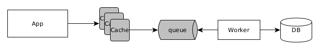

ENRIQUE MOLINARI
¿Arquitectura de Software?
Recordemos qué es...
DNS (Domain Name Service)
DNS (Domain Name Service)
Latencia: Medida de tiempo desde que sale el request hasta que llega la respuesta.
Latencia: DNS resolution + request time.
DNS (Domain Name Service)
Cualquier servicio en Internet, lo primero que contacta es a un DNS. Por este motivo la Web necesita que este servicio tenga alta disponibilidad y cercanía geografica para reducir la latencia. Por eso sus entradas estan replicadas en practicamente todo el planeta y esto es la principal causa por la cual actualizar tablas de DNSs lleva tiempo.
DNS (Domain Name Service)
Cuando apretamos enter luego de escribir una dirección web en un browser, éste inicia la resolución del nombre de la siguiente forma:
- Revisa el cache del Browser
- Revisa el cache del sistema operativo
- Revisa el cache del router
- Revisa el cache del ISP
- y finalmente el DNS del ISP inicia la búsqueda
DNS (Domain Name Service)
¿Qué pasa si el punto de entrada de mi aplicación esta duplicado para tener alta disponibilidad?
DNS (Domain Name Service)
¿Qué pasa si el punto de entrada de mi aplicación esta duplicado para tener alta disponibilidad?
DNS (Domain Name Service)
El DNS puede tener para una entrada de nombre múltiples IPs. Con cada petición devuelve ésta lista en orden diferente (round robin).
El browser intenta con la primera y si ese servicio esta abajo, sigue con el siguiente de la lista.
Load Balancers
Distribuye request hacia servicios deployados en diferentes equipos. Para esto posee una lista de los servicios a los que debe distribuir.
Hardware Based vs Sofware Based
Layer 4 (Transporte, IP:PORT) vs Layer 7 (Request completo)
API Gateway es Layer 7
Load Balancers
¿Cómo distribuye?
Round-Robin: En orden, cada request nuevo al siguiente.
Weighted Round-Robin: Algun servicio podría atender más request que otros.
Least Connections: Envía al servicio que esta ejecutando menos cantidad de request.
Least Response time: Selecciona segun cantidad de request ejecutándose y el tiempo promedio de respuesta.
Message Queues
Es un servicio que permite comunicar dos o más aplicaciones de forma asíncrona.
Ofrecen varias formas de comunicación (ej: 1 a 1 o 1 a N) y puede ser en memoria o en disco.
Message Queues
¿Pará que utilizaríamos una cola de mensajes?
Para reducir la latencia en procesos costosos. Ej: Consumo de un servicio en la Nube, consumo de un servicio externo a mi aplicación (ej: envío de un email), pre-procesamiento o denormalización de ciertos datos para mejorar las lecturas de ciertas funcionalidades, replicar datos, publicar eventos, entre otros.
Caching
¿Qué es?
Caching refiere al proceso de almancenar datos en un almancenamiento temporal de rápido acceso principalmente para reducir la latencia de nuestra aplicación.
El almancenamiento de rápido acceso es más caro y de poca capacidad, por eso es importante entener la mejor estrategia para tener ese cache fresco.
Caching
Caching
Algunos términos importantes
Cache hit: Es cuando se encuentra el dato en el cache y se recupera de allí.
Cache miss: Es cuando no se encuentra el dato en el cache y debe recuperarse del almacenamiento permanente
Cache eviction: Refiere a quitar entradas del cache porque estan desactualizadas, inconsistentes con el almacenamiento permanente.
TTL: Time to live. El tiempo en el que ese dato será borrado del cache.
Caching
Hoy las bases de datos NoSQL de tipo Clave-valor brillan para ser utilizadas como mecanimos de cache.
Redis, Memcache, Ehcache, etc.
Caching Strategies
Cache Aside (cache de lado)

La aplicación primero busca en cache si no encuentra va al almacenamiento persistente, luego refresca el cache y devuelve el dato. Require de TTL. Cuando hay cache miss la latencia es mayor.
Caching Strategies
Read Through
La aplicación siempre lee del cache. Si la entrada no esta allí es el cache quien busca en el almacenamiento permanente el dato y lo deja en cache para que este disponible. Require TTL. Al igual que la estrategia anterior, tiene latencia adicional si el dato no esta en cache.
Caching Strategies
Write Through
La aplicación siempre lee y escribe en cache (almancenamiento principal). El cache actualiza de forma síncrona, el almacenamiento persistente. No es atómico, tiene siempre latencia adicional en la escritura al ser síncrono, pero las lecturas siempre serán del cache. Podría haber datos en cache que nunca son leídos.
Caching Strategies
Write Behind
La aplicación siempre lee y escribe en cache (almancenamiento principal). El cache actualiza de forma asíncrona, el almacenamiento persistente. Elimino la latencia en las escrituras.
Caching Strategies
Refresh Ahead
El cache se configura para actualizar aquellos items que estan por expirar. Es específico para la lectura de ciertos items de datos. Las escrituras son sobre el almacenamiento persistente.
Browser Cache
¿Cómo funciona el request de una página web?
Browser Cache
Future Expire Headers: Utiliza la del cache, no me preguntes.
ExpiresActive On
ExpiresByType image/jpg "access plus 1 year"
ExpiresByType image/jpeg "access plus 1 year"
ExpiresByType image/gif "access plus 1 year"
ExpiresByType image/png "access plus 1 year"
ExpiresByType text/css "access plus 1 year"
ExpiresByType application/javascript "access plus 1 year"
¿Cuándo saco una versión nueva de la aplicación como invalido el cache de mis clientes?
Agregando un número de versión a todo lo que cache con future expire headers
Browser Cache
Agregando versionado al contenido estático
En cada nuevo deploy el número de versión debe cambiar. De esta forma el browser lo vuelve a pedir.
CDN (Content Delivery Network)
Deployamos contenido estatico cerca del cliente.
Imagenes, videos, js, css, etc
Servicio ofrecido por grandes ISPs para Aplicaciones con potencial acceso mundial.
Youtube, Netflix, etc, son grandes usuarios de CDN.